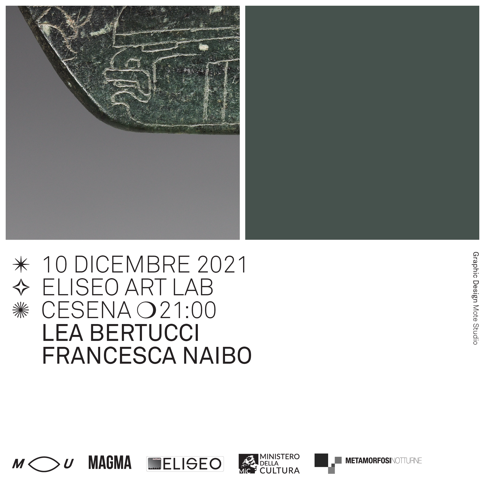
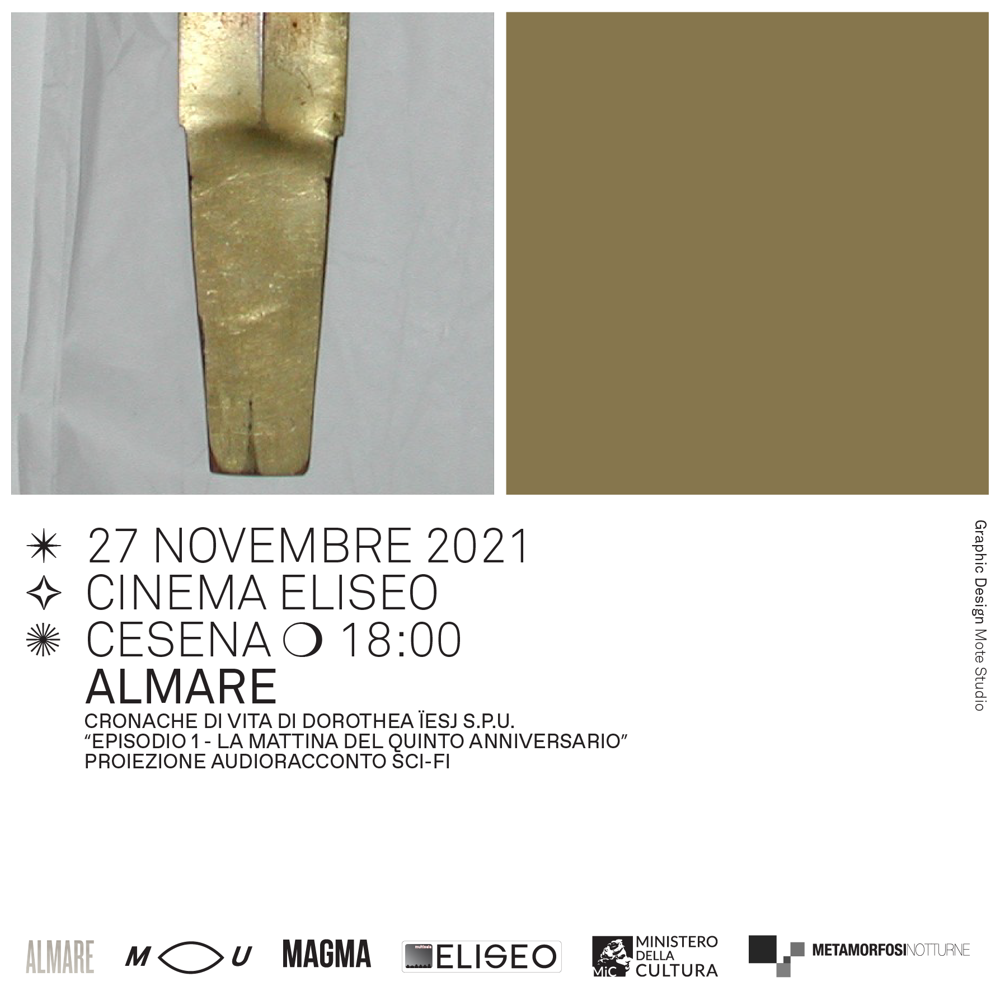
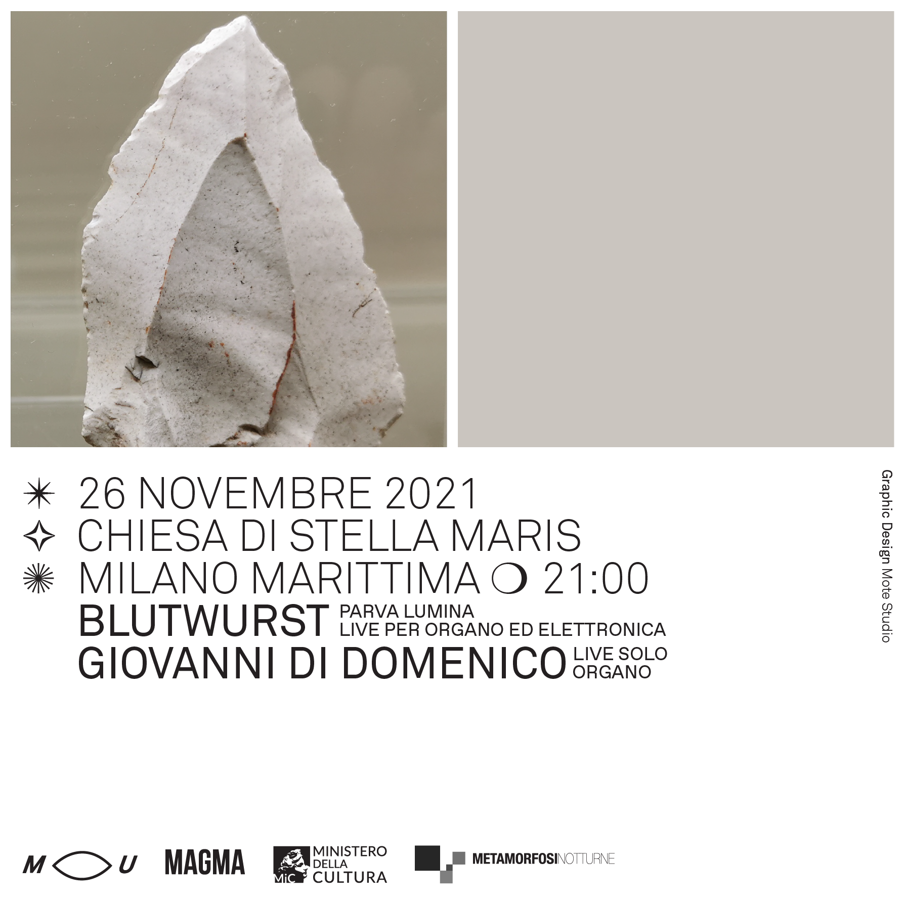
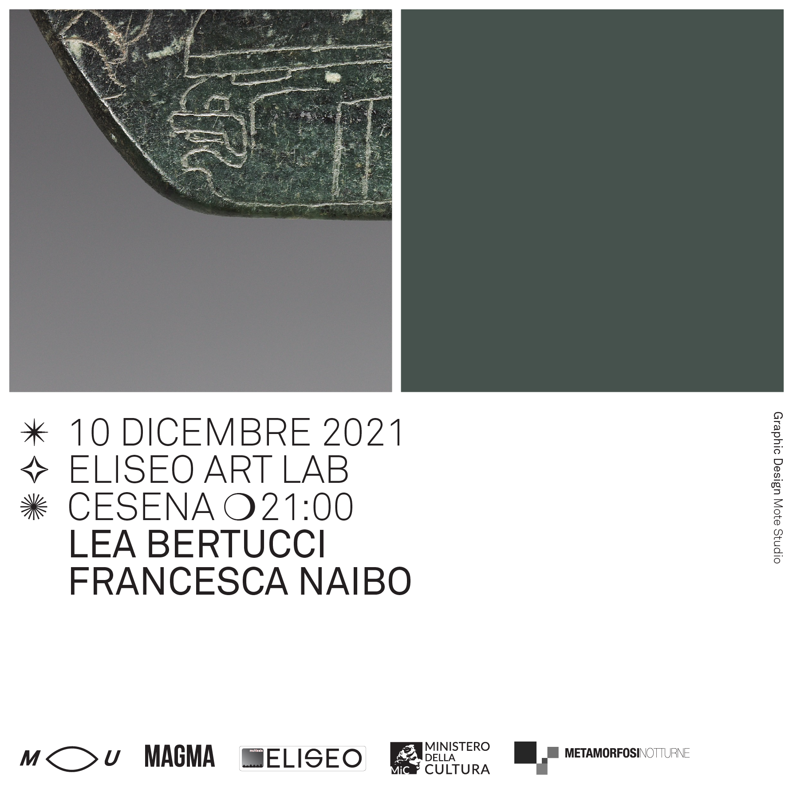
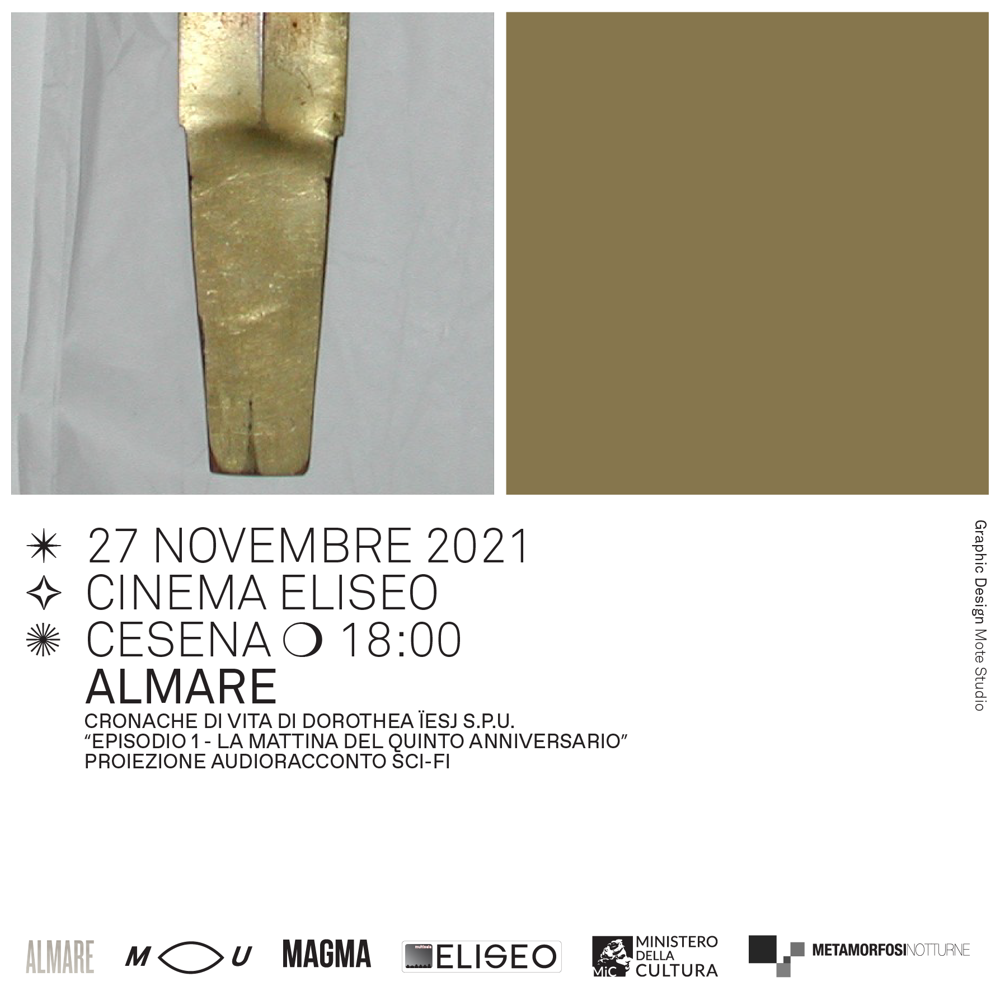
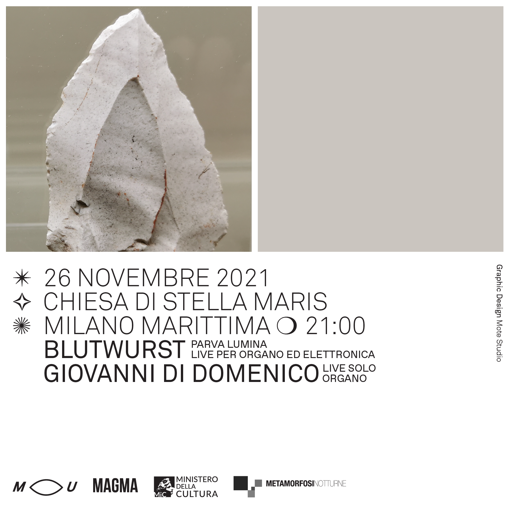

901 Editions Showcase – Giuseppe Ielasi | kNN / Renato Grieco | Luigi Turra
11.12.2021
Eliseo Art Lab Cesena
21.00
901 Editions, una delle più interessanti realtà discografiche del panorama nazionale, presenta dal vivo il lavoro di tre artisti il cui lavoro è stato pubblicato nel 2021.
Nato e cresciuto nel sud Italia, Giuseppe Ielasi ha iniziato a fare musica e tour dalla fine degli anni Novanta, da solo e nei progetti Bellows (con Nicola Ratti), Oreledigneur (con Renato Rinaldi), e in duo con Enrico Malatesta, Kassel Jaeger e Andrew Pekler. Collabora stabilmente anche con il fotografo e film-maker Armin Linke. Al momento si dedica principalmente all’attività di studio e ha inciso dischi per 12k, Senufo, Entr’Acte, Dekorder, Holidays. Lavora e vive con la moglie e i figli nella periferia milanese.
Renato Grieco è un compositore attivo maggiormente nel campo della musique concrète e della radio-arte. Dal 2013 si è esibito in Italia, Regno Unito, Francia, Svizzera, Russia, Germania, Norvegia, Danimarca, Polonia, Slovenia, Turchia, Malta, Grecia sia con il suo progetto solista (con lo pseudonimo kNN) che in numerose collaborazioni in veste di performer, interprete o drammaturgo del suono per la danza. È co-curatore del festival La Digestion – musica ascoltata raramente. Lavora come freelance location recordist freelance e come ingegnere del suono presso il KU studio (Napoli). Controincantesimo è il nuovo divertissement compositivo di kNN. In una prassi esecutiva in bilico tra tempo reale e acusmatica, la mania retorica del compositore napoletano assume questa volta una forma cameristica, tra lettere d’amore immaginate, cori in supermotion e cimeli dimenticati in una camera dell’ubiquità.
Luigi Turra è un compositore elettroacustico e sound artist. Il suo interesse principale è la ricerca dell’equilibrio acustico tra silenzio, percezione tattile del suono ed esplorazione basata sulla musica aleatoria. Attraverso la manipolazione di fonti concrete ed acustiche Turra sviluppa percorsi sonori in cui gli ascoltatori possano focalizzarsi su pause improvvise, tensioni sonore abrasive e momenti di stasi riferendosi costantemente alla bellezza dell’imperfezione. Il suo scopo poetico è ridurre al minimo i segni visivi/sonori per ricondurli alla loro forma archetipo. Luigi Turra ha pubblicato per le etichette Non Visual Objects (AT), and / OAR (US), Room40 (AU), LINE (US), Dragon’s Eye Recordings (US), Trente Oiseaux (DE) e 901 Editions (IT). Le sue installazioni sonore sono state presentate in Germania, Spagna, Finlandia, Stati Uniti, Giappone e Italia.
Lea Bertucci | Francesca Naibo
10.12.2021
Eliseo Art Lab Cesena
21.00
Lea Bertucci è una musicista sperimentale, compositrice e performer il cui lavoro è incentrato sulle relazioni tra fenomeni acustici e risonanze biologiche. Oltre alla sua pratica con strumenti a fiato il suo lavoro include diffusioni audio multicanale, tecniche di improvvisazione radicale e l’utilizzo creativo della tecnologia audio applicata alla registrazione ambientale e a tecniche di campionamento e collage sonoro. Negli ultimi anni ha realizzato progetti site-specific di investigazione acustica dell’architettura.
Ha pubblicato 8 dischi in solo, suonato negli Stati Uniti e in tutta Europa e realizzato lavori per l’INA GRM di Parigi, Quartetto Maurice di Torino ed è stata premiata con il Jfund for New Music Grant dall’American Composers’ Forum.
Francesca Naibo, chitarrista di Vittorio Veneto (TV) ma milanese di adozione, si muove agilmente tra tutte le varie coniugazioni della chitarra, dalla classica, all’elettrica, alla fretless fino alla pedal steel. Impegnata da anni nella ricerca della performance in solo, è concentrata nell’esplorazione dei campi dell’improvvisazione libera, della musica contemporanea e del repertorio classico, tre mondi differenti ma simili tra loro nel rapporto col suono. Il suo interesse è particolarmente focalizzato sull’uso sia della natura acustica che elettrica del suo strumento, avventurandosi tra droni ruggenti fino a microscopiche vibrazioni.
Ha studiato a Venezia, Milano, Berna e Basilea diplomandosi in chitarra classica e improvvisazione libera, e collabora con vari musicisti europei, specialmente nell’Europa Centrale e del Nord. Oltre alla sua attività artistica, è insegnante di chitarra alla scuola media a Milano.
ALMARE – Cronache di vita di Dorothea Ïesj S.P.U. “Episodio 1 – La mattina del quinto anniversario"
27.11.2021
Eliseo Art Lab Cesena
21.00
Cronache di vita di Dorothea Ïesj S.P.U. è un’audio-serie sci-fi, che segue il viaggio della ricercatrice Dorothea e le sue peripezie nell’estrarre (e rivendere) suoni del passato. Prendendo spunto dall’archeologia sonora e in particolare dalle teorie dell’archeoacustica, l’opera descrive un futuro immaginario in cui il suono può essere estratto dagli oggetti e dalla materia. L’audio romanzo indaga il legame tra capitalismo dei dati, tecnologia e creazione di valore.
Cronache fa parte del progetto multidisciplinare in corso All signs Point To Rome, Diane incentrato sull’auto-registrazione, l’auto-monitoraggio e l’audio mediumismo.
ALMARE è un collettivo la cui ricerca si dedica ai linguaggi che utilizzano il suono come mezzo espressivo, alle diverse declinazioni della nozione di ascolto e le loro potenzialità come strumenti di lettura delle dinamiche sociali. ALMARE lavora a cavallo tra pratiche artistiche e curatoriali, tramite scrittura, ricerca collettiva, produzione sonora e musicale.
BLUTWURST – Parva Lumina | Giovanni di Domenico
26.11.2021
Chiesa di Stella Maris
Milano Marittima
21.00
BLUTWURST – Parva Lumina Live per organo ed elettronica
Parva Lumina è un brano per organo a canne, elettronica e nastro magnetico dedicato al compositore e artista Fluxus Giuseppe Chiari (Firenze, 1926-2007). L’idea del brano nasce dalla realizzazione di La Luce, partitura testuale dell’artista fiorentino contenuta nella raccolta di scritti, partiture e opere Musica Madre.
Marco Baldini – elettronica
Daniela Fantechi – elettronica
Luisa Santacesaria – organo a canne
Giovanni di Domenico – Live per solo organo
Giovanni Di Domenico realizzerà nella chiesa di Stella Maris un concerto per solo organo, sfruttando le possibilità acustiche e spaziali del luogo e dell’organo a 2859 canne ospitato nella chiesa, strumento unico nel suo genere.
Ingresso 5€
Omaggio per studenti e disabili.
Evento realizzato da MU in collaborazione con Metaforfosi Notturne e Almare nell’ambito del progetto The Listeners, con il sostegno del Ministero della Cultura e con il supporto di Magma.
Progetto grafico di Mote Studio.
Per la partecipazione all’evento è richiesto il Green Pass rafforzato, valido per vaccinati o guariti dal Covid-19.
Maggiori informazioni: info@mmmu.it